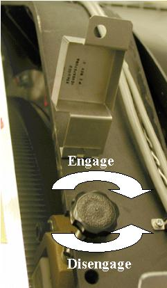
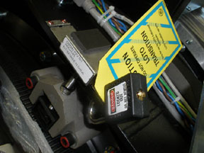

Operating Documentation
Direction 5193574-800, Rev# 22
LightSpeed 7.X Service Methods
Module Version 5.0, Version Date 9/17/09
Operating Documentation |
| Last Revised On: | August 4, 2009 |
| ||||
| Possible Electric Shock | ||||
| Servicing hardware with power on. | ||||
| Equipment service can only be performed SAFELY with the main Power "Disconnect" tagged and locked out. |
| ||||
| Possible Arc flash While equipment energized | ||||
| opening a1 disconnect door, troubleshooting pdu , or troubleshooting slipring with safety cover removed. | ||||
| wear appropriate arc flash ppe. |
| ||||
| CRUSH HAZARD. | ||||
| UNEXPECTED GANTRY ROTATION CAN CAUSE SERIOUS INJURY. | ||||
| Never service the gantry with the axial drive enabled. Use the gantry rotation lock to lock out gantry rotation. See safety menu of Service Document gui for appropriate procedures. |
Follow these general rules:
All installed GE Healthcare systems require a LOTO compatible A1 Disconnect.
Only qualified service personnel trained in the service and operation of this scanner, options, and accessories should perform any service on this equipment. Service personnel must observe and apply LOTO as defined by annual LOTO training.
Equipment fuses, switches, and circuit breakers are for fire and equipment protection only. Do not rely on them to protect you against electrical shock or un-commanded equipment motion. This includes the Gantry Service Switch Panel!
Personal Protection Equipment (PPE) is required and must be worn.
The service switches and circuit breakers described hereafter are not to be relied on as personal protection devices. They do not replace tag and lockout of main power to ensure personal safety. Switches and breakers are intended to only inhibit particular system functions and equipment operation. They do not eliminate or remove the electrical or mechanical hazards that exist. Because hardware can fail and defeat the functionality of these devices, only Lockout/Tagout ensures protection from unattended gantry rotation and electrocution.
Personal protection equipment must always be used when performing service on this equipment. Always use PPE when working with hazardous chemicals or materials.
Table 1: LOTO Overview
| Name of Equipment | Number of Locks | Authorized Employees to perform LOTO | Title(s) of Affected Employees | How to Notify |
| LightSpeed System | 2 Personal LOTO locks per person working on system. 2 Transition LOTO locks per person. | All trained in Lockout Tagout (LOTO) | Customers, Guest/Visitors, Field Engineers, and Contractors | Verbal |
Table 2: System Energy Sources
| ENERGY SOURCE | YES | NO | LOCATION OF ENERGY ISOLATING MEANS | MAGNITUDE OF ENERGY |
| Electrical | x | A1 Panel or Main Disconnect Panel | Nominal 480v AC or 380v AC | |
| Pneumatic | x | |||
| Hydraulic | x | Inside Gantry (Tilt locking devices) | ||
| Gas/Water/Steam | x | |||
| Chemical | x | |||
| Mechanical Motion | x | Inside Gantry (Rotation lock) | ||
| Gravity | x | Inside Gantry (Rotation lock) | ||
| Springs | x | |||
| Thermal | x | Time interval as defined by procedure. | ||
| Stored Energy | x | Time interval as defined by procedure. | ||
| Air Under Pressure | x | |||
| Oil Under Pressure | x | As defined in section 4. | ||
| Water Under Pressure | x | |||
| Gas Under Pressure | x | |||
| Steam | x | |||
| Other | x |
Following are the Lock Out Tag Out/Safety procedures relating to Thermal, Electrical, Mechanical, Gravity, and Hydraulic energy in the system. Be familiar with these procedures as they are referenced in the service procedures when appropriate.
When working on the CT LightSpeed gantry after the system has been scanning, you may have to wait for up to 60 minutes for the tube and heat exchanger to cool down if you will be touching the tube. A more specific cooling period for performing service on the tube will be found in the X-ray tube service procedures. Stored energy of the system is also dissipated during this period.
Prepare for shutdown of equipment. Notify affected personnel working in the area, via verbal communication, that LOTO is being performed.
Bring the system software down at the operator console.
After software shutdown is complete, wait two minutes and then place console power switch in the OFF position.
Press the emergency stop button on the A1 Panel or Disconnect Panel.
If there is an on/off switch controlled by a key, turn to off position.
All personnel servicing the system must place their personal LOTO devices and tags on the A1 Panel of Main Disconnect Panel. SeeIllustration 1 for example.
Verify that all energy has been dissipated as follows. Take the top and front cover off the PDU. Measure incoming system power at TS1 (for NGPDU) or Input Power Panel (for Compact PDU). Measure each phase to ground with a DVM (Voltage measuring device) and verify electrical power is not present.
Wait 5 minutes for any stored energy in capacitors to dissipate.
Service/repair the CT system per service instructions.
Illustration 1: A1/Main Disconnect Panel Example

Notify affected personnel that equipment will be re-energized and LOTO devices are being removed.
All service personnel are to remove their personal LOTO lock and tag from A1 Panel or Main Disconnect Panel.
Re-apply power to the PDU Cabinet.
Reset the Gantry drives by pushing the reset button on any of the control panels.
Bring the system software back up.
Remove the right side (tube change side) gantry cover.
Disable Axial Drive from the service switch panel or STC backplane depending on your system version.
Engage the Gantry rotational lock by turning the handle in a clockwise direction until the gantry will no longer move. See Illustration 2.
Pull safety lid over top of Gantry lock knob and lock with personal lock and tag. See Illustration 3.
Remove power from the system (see Section 2.1).
Service/repair the Gantry per service procedures.
Illustration 2: Gantry Rotational Lock

Illustration 3: Gantry Rotation Locked Out with Personal LOTO Lock

| ||||
| If the Personal LOTO lock is in use at the A1 Main Disconnect Panel and work is being performed on the CT gantry, then the Transistion lock must be applied to the Gantry Rotational Lock mechanism. | ||||
Illustration 4: Gantry Rotation Locked Out with Transitional Lock

Verify all test equipment has been removed from the Gantry and all components are installed and torqued per service procedures.
Notify affected personnel that Gantry LOTO devices are being removed.
Remove Gantry Lock-Out Tag-Out equipment and disengage the Gantry rotational lock.
Rotate Gantry by hand and check cable clearance to ensure there are no obstructions that would limit gantry rotation.
Restore power to the system (see Section 2.2).
Enable Axial Drive.
| ||||
| This procedure is to lock the gantry from tilting. This is not for use when replacing the tilt hydraulic cylinders. The appropriate method is documented in that replacement procedure. | ||||
Position gantry at zero degrees tilt.
Take shipping brackets from storage location.
Bolt them in place on both sides of the gantry using 3 bolts with each bracket. See Illustration 5.
Remove power from the system (see Section 2.1).
Service the gantry per service procedures.
Illustration 5: Gantry Tilt Locking Method

Restore power to the system (see Section 2.2).
Notify affected personnel that gantry locking devices are being removed.
On the left side of the gantry, remove the two bolts at the base of the Locking bracket.
Keep your hands and body well clear of the gantry. Use a socket wrench with an extension and remove the final bolt from the rotating side of the gantry, allowing the bracket to fall freely (being held by the wrench and final bolt being removed).
Carefully remove the Locking Bracket with one hand, minimizing any exposure to potential pinch points.
On the Right side of the gantry, remove the two bolts at the base of the locking bracket.
Keep your hands and body well clear of the gantry and any potential pinch points. Use a socket wrench with an extension to ONLY LOOSEN the final bolt from the rotating side of the gantry 3 full turns. There should be NO movement of the gantry when this final bolt is loosened.
If even a SLIGHT gantry movement is observed and/or the bolt feels like it is binding excessively DO NOT proceed with its removal. Escalate issue, and seek Field Leadership direction immediately for instructions on how to proceed safely.
If NO gantry movement is observed when the bolt was loosened, use a socket wrench with an extension to complete the removal of the final bolt, allowing the bracket to fall freely (being held by the wrench and final bolt being removed).
Carefully remove the Locking Bracket with one hand, minimizing any exposure to potential pinch points.
Return gantry tilt shipping brackets to their storage location.
Stored or thermal energy from oil under pressure is covered in the following procedures: Tube Replacement, HV Tank Replacement, Heater Exchanger Pump Replacement, and Heater Exchanger Replacement.